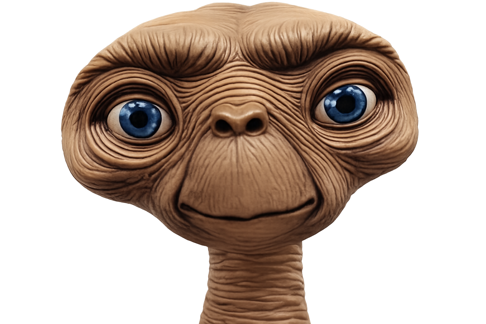
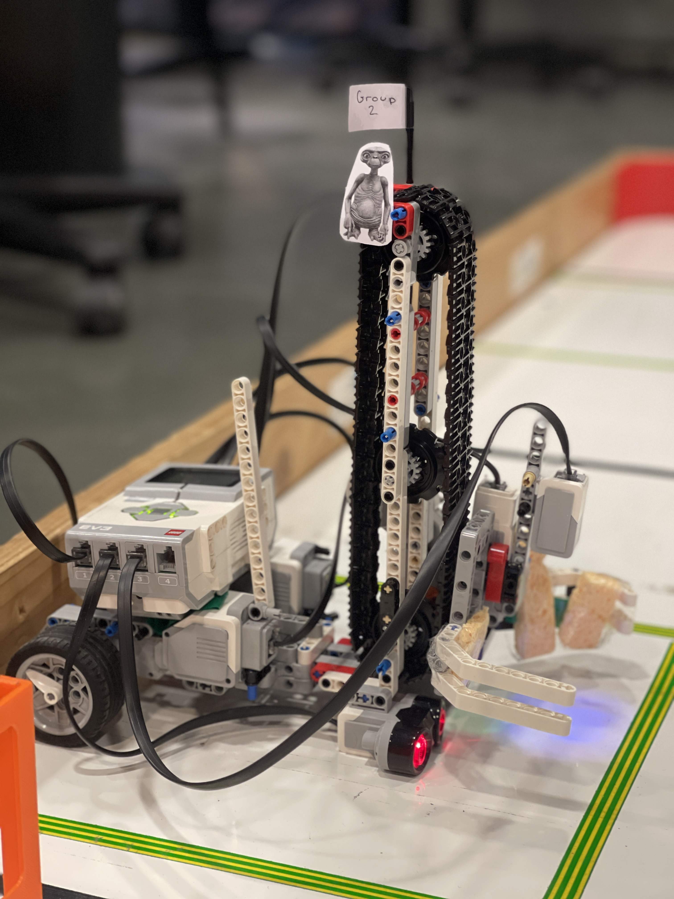
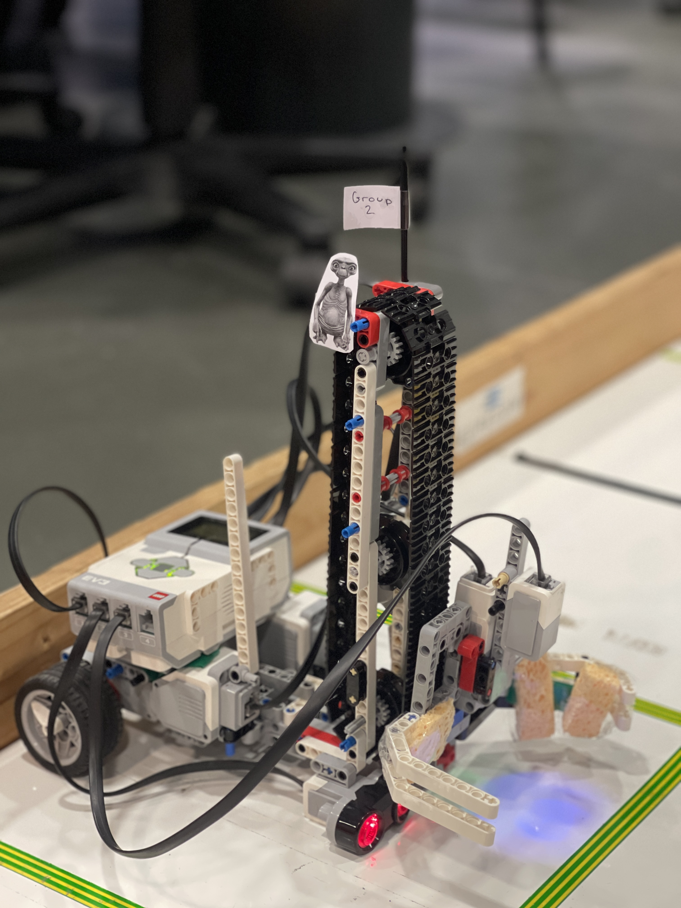
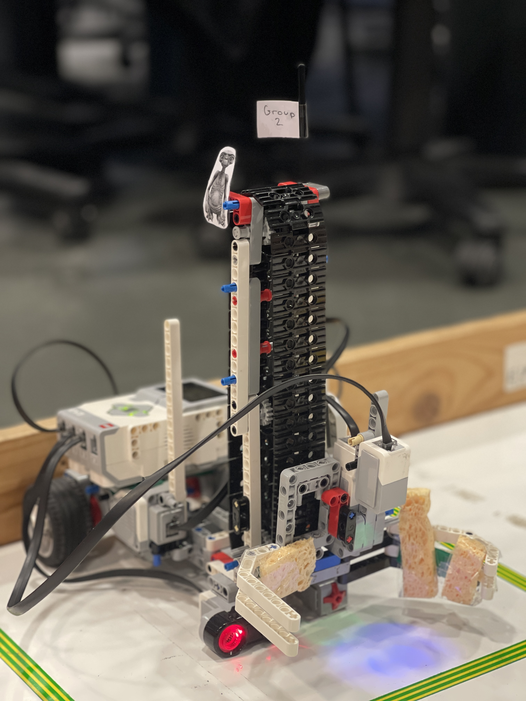
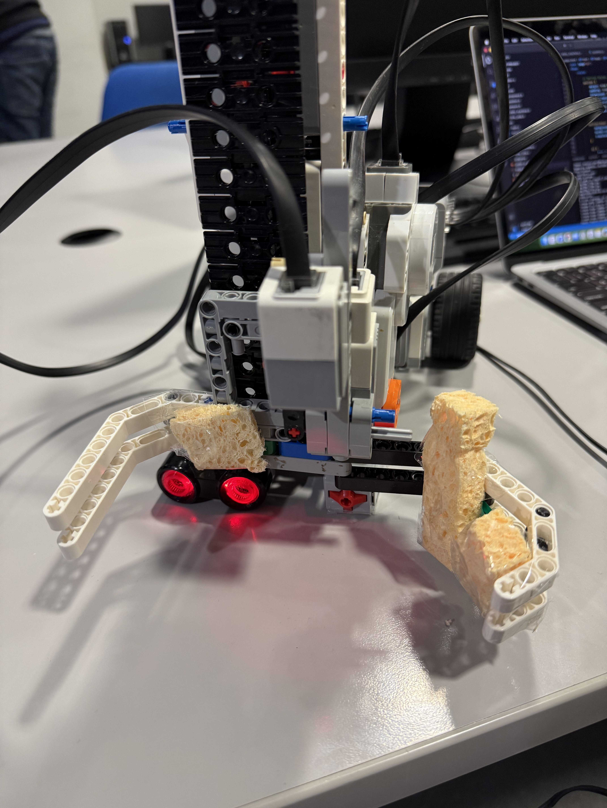
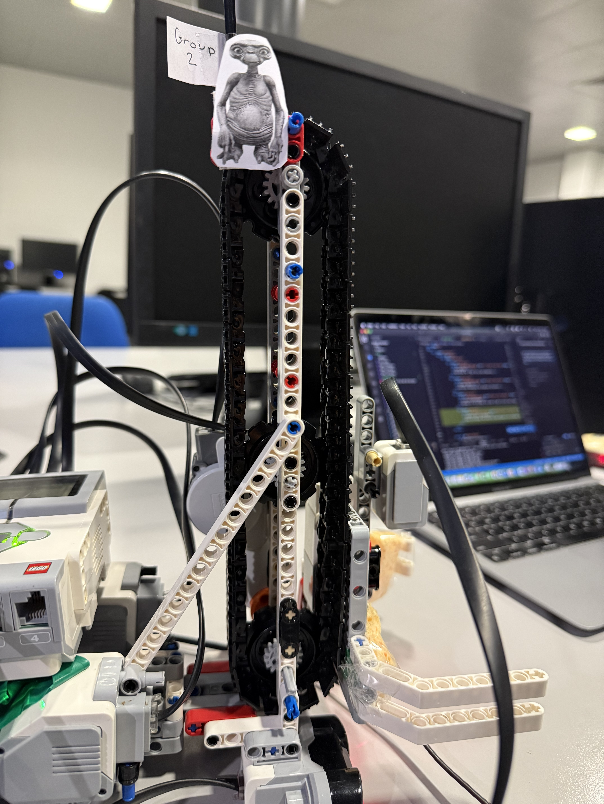
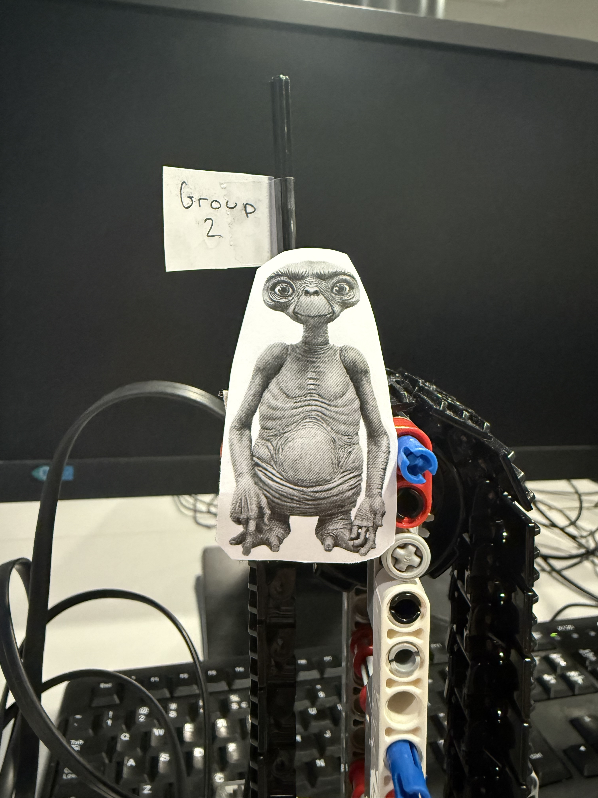
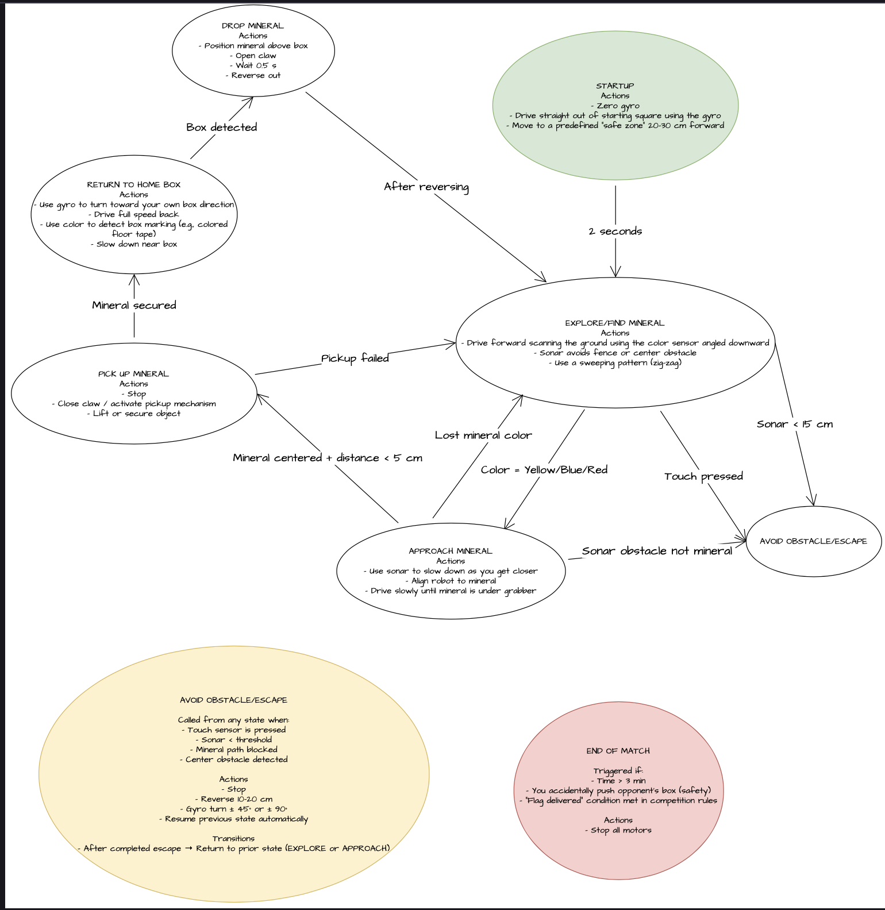

E.T. RobotAutonomous Resource Mining Champion
Successfully collected
No human intervention
Position update rate
Navigation accuracy
Finite state machine
Clean competition run
The E.T. robot is designed for maximum efficiency in resource collection with advanced sensor integration and autonomous navigation capabilities.
Autonomous Navigation & Mining Demonstration
30 × 30 × 35 cm
4× EV3 Motors
Color · Ultrasonic · Touch . Gyro
C Programming

Sensor array and "Long Neck" design.

Optimized for tight turns and stability.

Precision mechanism for mineral collection.

Sponges on the gripper are used to add friction and support for picking up irregular objects.

Used to elevate the minerals high enough to be dropped into the home box.

E.T. our mascot, watching over as we bring the minerals home.
The robot is controlled using a finite state machine (FSM). Each state represents a high-level behavior, and transitions are triggered by sensor readings, timers, or navigation conditions.
while (match_running) {
get_encoder_deltas(&d_left, &d_right);
gyro = getGyroAngle();
update_pose(&ctx, d_left, d_right, gyro);
update_state_machine(&ctx);
Sleep(20); // 50 Hz update rate
}
Initializes the robot at match start. Sets first target mineral position and begins slow forward movement. Immediately transitions to EXPLORE.
Transition: → EXPLORE
Main navigation state. Robot moves forward toward current target mineral while continuously scanning for red minerals with color sensor. Ultrasonic sensor monitors for obstacles. Periodically realigns heading to compensate for odometry drift.
Key Parameters:
Transitions:
Calculates heading error between current pose and target using atan2. Executes either full turn (large errors) or smooth arc correction (small errors). Uses gyroscope feedback to ensure accurate angle completion.
heading_error = atan2(target.y - current.y, target.x - current.x) - current.theta
Transition: After alignment → EXPLORE or RETURN_HOME (context-dependent)
Short forward movement (200ms) to position grabber directly in front of detected mineral. Fixed duration ensures consistent positioning regardless of detection distance.
Transition: After 200ms → PICKUP_MINERAL
Executes pickup sequence with blocking delays:
Transition: → RETURN_HOME
Navigates to collection box using 2D odometry. Continuously updates heading toward box_position. Monitors distance to target and ultrasonic sensor. When within threshold distance (15cm) AND sonar detects box, transitions to drop.
Safety timeout: 20 seconds maximum
Transition: Near box + sonar detection → DROP_MINERAL
Multi-step drop sequence:
Transition: → EXPLORE
Simple reactive behavior: move backward at AVOID_SPEED for fixed duration, then realign toward target. Prevents getting stuck on obstacles.
Transition: → ALIGN_TARGET_POSE
Below is a real log from our successful competition run against Team 6. It shows the state transitions, sensor readings, and navigation decisions made by the robot during the match.
./start_left state_machine
EV3 initialized
Waiting for motors to be detected...
Motors detected!
Motors found: Left=C, Right=B
Found sensors:
type = lego-ev3-us
port = in2
mode = US-DIST-CM
value0 = 385
-> Sonar sensor registered
type = lego-ev3-gyro
port = in1
mode = GYRO-ANG
value0 = 38
-> Gyro sensor callibrated and registered
type = lego-ev3-color
port = in3
mode = COL-COLOR
value0 = 1
-> Color sensor registered
Sensor initialization complete.
Mode selected: State Machine
Starting FSM
[FSM] 0 -> 2
[STATE] EXPLORE
dst: 60.000000 0.000000 -0.000000
Distance to target: 43.672623
Pose -> X: 16.33 cm | Y: -0.21 cm | Theta: -1 deg
[FSM] 2 -> 1
[STATE] ALIGN TARGET POSE
Gyro turn started: right 4 deg at 15%
Gyro turn complete (delta=4)
[FSM] 1 -> 2
[STATE] EXPLORE
dst: 60.000000 0.000000 0.000000
Distance to target: 28.709867
Pose -> X: 31.30 cm | Y: -0.82 cm | Theta: 2 deg
Distance to target: 11.693772
Pose -> X: 48.31 cm | Y: -0.22 cm | Theta: 2 deg
[FSM] 2 -> 3
[STATE] APPROACH MINERAL
[FSM] 3 -> 4
[STATE] PICKUP MINERAL
Grabber opened by 100 degrees
Lift arm raised by 500 degrees
[FSM] 4 -> 5
[STATE] RETURN HOME
Heading to OFFSET: 0.000000 -40.000000
[FSM] 5 -> 1
[STATE] ALIGN TARGET POSE
Gyro turn started: left 144 deg at 15%
Pose -> X: 54.79 cm | Y: -0.09 cm | Theta: -10 deg
Pose -> X: 54.72 cm | Y: -0.07 cm | Theta: -28 deg
Pose -> X: 54.72 cm | Y: -0.07 cm | Theta: -46 deg
Pose -> X: 54.74 cm | Y: -0.10 cm | Theta: -63 deg
Pose -> X: 54.73 cm | Y: -0.07 cm | Theta: -82 deg
Pose -> X: 54.73 cm | Y: -0.10 cm | Theta: -101 deg
Pose -> X: 54.71 cm | Y: -0.12 cm | Theta: -122 deg
Pose -> X: 54.72 cm | Y: -0.09 cm | Theta: -141 deg
Gyro turn complete (delta=144)
[FSM] 1 -> 5
[STATE] RETURN HOME
Heading to OFFSET: 0.000000 -40.000000
[FSM] 5 -> 1
[STATE] ALIGN TARGET POSE
[FSM] 1 -> 5
[STATE] RETURN HOME
Heading to OFFSET: 0.000000 -40.000000
[FSM] 5 -> 1
[STATE] ALIGN TARGET POSE
[FSM] 1 -> 5
[STATE] RETURN HOME
Heading to OFFSET: 0.000000 -40.000000
Distance to target: 53.854519
Pose -> X: 43.46 cm | Y: -8.20 cm | Theta: -145 deg
Distance to target: 38.188187
Pose -> X: 30.56 cm | Y: -17.11 cm | Theta: -146 deg
[FSM] 5 -> 1
[STATE] ALIGN TARGET POSE
Gyro turn started: right 4 deg at 15%
Gyro turn complete (delta=4)
[FSM] 1 -> 5
[STATE] RETURN HOME
Heading to OFFSET: 0.000000 -40.000000
Distance to target: 25.628178
Pose -> X: 20.51 cm | Y: -24.63 cm | Theta: -142 deg
[FSM] 5 -> 6
[STATE] DROP MINERAL
Pose -> X: 8.71 cm | Y: -33.97 cm | Theta: -139 deg
Grabber closed by 100 degrees
Lift arm lowered by 500 degrees
[FSM] 6 -> 2
[STATE] EXPLORE
dst: 120.000000 -5.000000 -3320473600.000014
[FSM] 2 -> 1
[STATE] ALIGN TARGET POSE
Gyro turn started: right 143 deg at 15%
Pose -> X: 28.65 cm | Y: -15.34 cm | Theta: -117 deg
Pose -> X: 28.65 cm | Y: -15.34 cm | Theta: -95 deg
Pose -> X: 28.67 cm | Y: -15.40 cm | Theta: -68 deg
Pose -> X: 28.64 cm | Y: -15.34 cm | Theta: -40 deg
Pose -> X: 28.66 cm | Y: -15.36 cm | Theta: -4 deg
Gyro turn complete (delta=143)
[FSM] 1 -> 2
[STATE] EXPLORE
dst: 120.000000 -5.000000 0.000000
[FSM] 2 -> 1
[STATE] ALIGN TARGET POSE
[FSM] 1 -> 2
[STATE] EXPLORE
dst: 120.000000 -5.000000 0.000001
[FSM] 2 -> 1
[STATE] ALIGN TARGET POSE
[FSM] 1 -> 2
[STATE] EXPLORE
dst: 120.000000 -5.000000 0.000013
Distance to target: 78.962189
Pose -> X: 41.55 cm | Y: -13.99 cm | Theta: 6 deg
Distance to target: 62.667065
Pose -> X: 57.76 cm | Y: -12.33 cm | Theta: 5 deg
[FSM] 2 -> 1
[STATE] ALIGN TARGET POSE
[FSM] 1 -> 2
[STATE] EXPLORE
dst: 120.000000 -5.000000 0.000042
Distance to target: 44.941303
Pose -> X: 75.43 cm | Y: -10.79 cm | Theta: 5 deg
[FSM] 2 -> 1
[STATE] ALIGN TARGET POSE
Gyro turn started: right 5 deg at 15%
Pose -> X: 92.99 cm | Y: -9.42 cm | Theta: 4 deg
Gyro turn complete (delta=5)
[FSM] 1 -> 2
[STATE] EXPLORE
dst: 120.000000 -5.000000 0.000000
Distance to target: 14.132041
Pose -> X: 106.00 cm | Y: -6.90 cm | Theta: 11 deg
[FSM] 2 -> 1
[STATE] ALIGN TARGET POSE
Gyro turn started: left 22 deg at 15%
Pose -> X: 119.06 cm | Y: -4.47 cm | Theta: 7 deg
[FSM] 1 -> 3
[STATE] APPROACH MINERAL
[FSM] 3 -> 4
[STATE] PICKUP MINERAL
Grabber opened by 100 degrees
Lift arm raised by 500 degrees
[FSM] 4 -> 5
[STATE] RETURN HOME
Heading to OFFSET: 0.000000 -40.000000
[FSM] 5 -> 1
[STATE] ALIGN TARGET POSE
Gyro turn started: left 153 deg at 15%
Pose -> X: 122.03 cm | Y: -4.96 cm | Theta: -16 deg
Pose -> X: 122.03 cm | Y: -4.96 cm | Theta: -36 deg
Pose -> X: 122.05 cm | Y: -4.98 cm | Theta: -58 deg
Pose -> X: 122.04 cm | Y: -4.95 cm | Theta: -79 deg
Pose -> X: 122.04 cm | Y: -4.95 cm | Theta: -95 deg
Pose -> X: 122.04 cm | Y: -4.95 cm | Theta: -115 deg
Pose -> X: 122.02 cm | Y: -4.98 cm | Theta: -132 deg
Pose -> X: 122.04 cm | Y: -4.96 cm | Theta: -148 deg
Gyro turn complete (delta=153)
[FSM] 1 -> 5
[STATE] RETURN HOME
Heading to OFFSET: 0.000000 -40.000000
[FSM] 5 -> 1
[STATE] ALIGN TARGET POSE
[FSM] 1 -> 5
[STATE] RETURN HOME
Heading to OFFSET: 0.000000 -40.000000
[FSM] 5 -> 1
[STATE] ALIGN TARGET POSE
[FSM] 1 -> 5
[STATE] RETURN HOME
Heading to OFFSET: 0.000000 -40.000000
Distance to target: 123.766968
Pose -> X: 118.95 cm | Y: -5.82 cm | Theta: -165 deg
Distance to target: 109.016296
Pose -> X: 104.65 cm | Y: -9.46 cm | Theta: -166 deg
[FSM] 5 -> 1
[STATE] ALIGN TARGET POSE
Gyro turn started: right 5 deg at 15%
Pose -> X: 89.58 cm | Y: -12.98 cm | Theta: -168 deg
Gyro turn complete (delta=5)
[FSM] 1 -> 5
[STATE] RETURN HOME
Heading to OFFSET: 0.000000 -40.000000
Distance to target: 81.883095
Pose -> X: 78.38 cm | Y: -16.30 cm | Theta: -164 deg
[FSM] 5 -> 1
[STATE] ALIGN TARGET POSE
Gyro turn started: right 4 deg at 15%
Pose -> X: 64.10 cm | Y: -20.04 cm | Theta: -165 deg
Gyro turn complete (delta=4)
[FSM] 1 -> 5
[STATE] RETURN HOME
Heading to OFFSET: 0.000000 -40.000000
Distance to target: 54.312531
Pose -> X: 51.93 cm | Y: -24.09 cm | Theta: -162 deg
[FSM] 5 -> 1
[STATE] ALIGN TARGET POSE
[FSM] 1 -> 5
[STATE] RETURN HOME
Heading to OFFSET: 0.000000 -40.000000
Distance to target: 38.637329
Pose -> X: 36.94 cm | Y: -28.67 cm | Theta: -163 deg
[FSM] 5 -> 1
[STATE] ALIGN TARGET POSE
[FSM] 1 -> 5
[STATE] RETURN HOME
Heading to OFFSET: 0.000000 -40.000000
Distance to target: 22.310280
Pose -> X: 21.27 cm | Y: -33.27 cm | Theta: -164 deg
[FSM] 5 -> 6
[STATE] DROP MINERAL
Grabber closed by 100 degrees
Lift arm lowered by 500 degrees
[FSM] 6 -> 2
[STATE] EXPLORE
dst: 2.000062 0.000000 -5227307008.000001
[FSM] 2 -> 1
[STATE] ALIGN TARGET POSE
Gyro turn started: left 55 deg at 15%
Pose -> X: 37.38 cm | Y: -28.65 cm | Theta: -164 deg
Pose -> X: 37.28 cm | Y: -28.65 cm | Theta: -188 deg
Pose -> X: 37.31 cm | Y: -28.65 cm | Theta: -212 deg
Gyro turn complete (delta=55)
[FSM] 1 -> 2
[STATE] EXPLORE
dst: 2.000062 0.000000 0.000000
[FSM] 2 -> 1
[STATE] ALIGN TARGET POSE
[FSM] 1 -> 2
[STATE] EXPLORE
dst: 2.000062 0.000000 0.000001
[FSM] 2 -> 1
[STATE] ALIGN TARGET POSE
[FSM] 1 -> 2
[STATE] EXPLORE
dst: 2.000062 0.000000 0.000001
Distance to target: 33.994225
Pose -> X: 28.59 cm | Y: -21.18 cm | Theta: -221 deg
Distance to target: 17.302166
Pose -> X: 15.97 cm | Y: -10.21 cm | Theta: -221 deg
[FSM] 2 -> 1
[STATE] ALIGN TARGET POSE
Gyro turn started: right 6 deg at 15%
Gyro turn complete (delta=6)
[FSM] 1 -> 2
[STATE] EXPLORE
dst: 2.000062 0.000000 -0.000000
Distance to target: 3.750161
Pose -> X: 5.01 cm | Y: -2.24 cm | Theta: -213 deg
[FSM] 2 -> 1
[STATE] ALIGN TARGET POSE
Gyro turn started: left 176 deg at 15%
Pose -> X: -8.41 cm | Y: 7.16 cm | Theta: -218 deg
Pose -> X: -8.56 cm | Y: 7.29 cm | Theta: -237 deg
Pose -> X: -8.55 cm | Y: 7.26 cm | Theta: -258 deg
Pose -> X: -8.56 cm | Y: 7.26 cm | Theta: -279 deg
Pose -> X: -8.56 cm | Y: 7.26 cm | Theta: -297 deg
Pose -> X: -8.57 cm | Y: 7.23 cm | Theta: -319 deg
Pose -> X: -8.52 cm | Y: 7.27 cm | Theta: -339 deg
Pose -> X: -8.52 cm | Y: 7.26 cm | Theta: -359 deg
Pose -> X: -8.55 cm | Y: 7.27 cm | Theta: -379 deg
Gyro turn complete (delta=176)
[FSM] 1 -> 2
[STATE] EXPLORE
dst: 2.000062 0.000000 -0.000000
[FSM] 2 -> 1
[STATE] ALIGN TARGET POSE
[FSM] 1 -> 2
[STATE] EXPLORE
dst: 2.000062 0.000000 0.000001
[FSM] 2 -> 1
[STATE] ALIGN TARGET POSE
[FSM] 1 -> 2
[STATE] EXPLORE
dst: 2.000062 0.000000 0.000001
Distance to target: 7.968719
Pose -> X: -4.58 cm | Y: 4.50 cm | Theta: -395 deg
Distance to target: 9.441856
Pose -> X: 9.68 cm | Y: -5.49 cm | Theta: -395 deg
[FSM] 2 -> 1
[STATE] ALIGN TARGET POSE
Gyro turn started: right 180 deg at 15%
Pose -> X: 18.67 cm | Y: -11.94 cm | Theta: -389 deg
Pose -> X: 18.67 cm | Y: -11.94 cm | Theta: -365 deg
Pose -> X: 18.67 cm | Y: -11.95 cm | Theta: -329 deg
Pose -> X: 18.68 cm | Y: -11.95 cm | Theta: -293 deg
Pose -> X: 18.68 cm | Y: -11.95 cm | Theta: -262 deg
Pose -> X: 18.68 cm | Y: -11.95 cm | Theta: -234 deg
Gyro turn complete (delta=180)
[FSM] 1 -> 2
[STATE] EXPLORE
dst: 2.000062 0.000000 -0.000000
[FSM] 2 -> 1
[STATE] ALIGN TARGET POSE
[FSM] 1 -> 2
[STATE] EXPLORE
dst: 2.000062 0.000000 0.000006
[FSM] 2 -> 1
[STATE] ALIGN TARGET POSE
[FSM] 1 -> 2
[STATE] EXPLORE
dst: 2.000062 0.000000 0.000006
Distance to target: 16.368061
Pose -> X: 15.28 cm | Y: -9.57 cm | Theta: -215 deg
Distance to target: 0.505502
Pose -> X: 1.50 cm | Y: 0.08 cm | Theta: -215 deg
[FSM] 2 -> 1
[STATE] ALIGN TARGET POSE
Gyro turn started: left 177 deg at 15%
Pose -> X: -8.53 cm | Y: 7.20 cm | Theta: -221 deg
Pose -> X: -8.53 cm | Y: 7.20 cm | Theta: -236 deg
Pose -> X: -8.53 cm | Y: 7.20 cm | Theta: -251 deg
Pose -> X: -8.53 cm | Y: 7.20 cm | Theta: -268 deg
Pose -> X: -8.53 cm | Y: 7.20 cm | Theta: -278 deg
Pose -> X: -8.53 cm | Y: 7.13 cm | Theta: -296 deg
Pose -> X: -8.49 cm | Y: 7.18 cm | Theta: -320 deg
Pose -> X: -8.52 cm | Y: 7.17 cm | Theta: -339 deg
Pose -> X: -8.45 cm | Y: 7.18 cm | Theta: -361 deg
Pose -> X: -8.49 cm | Y: 7.18 cm | Theta: -380 deg
Gyro turn complete (delta=177)
[FSM] 1 -> 2
[STATE] EXPLORE
dst: 2.000062 0.000000 0.000000
[FSM] 2 -> 1
[STATE] ALIGN TARGET POSE
[FSM] 1 -> 2
[STATE] EXPLORE
dst: 2.000062 0.000000 0.000003
[FSM] 2 -> 1
[STATE] ALIGN TARGET POSE
[FSM] 1 -> 2
[STATE] EXPLORE
dst: 2.000062 0.000000 0.000001
Distance to target: 7.864048
Pose -> X: -4.52 cm | Y: 4.40 cm | Theta: -395 deg
Distance to target: 9.253160
Pose -> X: 9.50 cm | Y: -5.42 cm | Theta: -395 deg
[FSM] 2 -> 1
[STATE] ALIGN TARGET POSE
Gyro turn started: right 179 deg at 15%
Pose -> X: 18.86 cm | Y: -11.97 cm | Theta: -382 deg
Pose -> X: 18.83 cm | Y: -11.97 cm | Theta: -343 deg
Pose -> X: 18.83 cm | Y: -11.98 cm | Theta: -302 deg
Pose -> X: 18.84 cm | Y: -11.95 cm | Theta: -273 deg
Pose -> X: 18.83 cm | Y: -11.96 cm | Theta: -248 deg
Pose -> X: 18.83 cm | Y: -11.96 cm | Theta: -225 deg
Gyro turn complete (delta=179)
[FSM] 1 -> 2
[STATE] EXPLORE
dst: 2.000062 0.000000 -0.000000
[FSM] 2 -> 1
[STATE] ALIGN TARGET POSE
[FSM] 1 -> 2
[STATE] EXPLORE
dst: 2.000062 0.000000 0.000001
[FSM] 2 -> 1
[STATE] ALIGN TARGET POSE
[FSM] 1 -> 2
[STATE] EXPLORE
dst: 2.000062 0.000000 0.000119
Distance to target: 10.206362
Pose -> X: 10.23 cm | Y: -6.04 cm | Theta: -215 deg
Distance to target: 5.568741
Pose -> X: -2.61 cm | Y: 3.13 cm | Theta: -216 deg
[FSM] 2 -> 1
[STATE] ALIGN TARGET POSE
Gyro turn started: left 178 deg at 15%
Pose -> X: -8.49 cm | Y: 7.50 cm | Theta: -228 deg
Pose -> X: -8.50 cm | Y: 7.53 cm | Theta: -246 deg
Pose -> X: -8.49 cm | Y: 7.50 cm | Theta: -265 deg
Pose -> X: -8.49 cm | Y: 7.50 cm | Theta: -284 deg
Pose -> X: -8.48 cm | Y: 7.50 cm | Theta: -303 deg
Pose -> X: -8.48 cm | Y: 7.50 cm | Theta: -321 deg
Pose -> X: -8.51 cm | Y: 7.49 cm | Theta: -338 deg
Pose -> X: -8.51 cm | Y: 7.49 cm | Theta: -355 deg
Pose -> X: -8.48 cm | Y: 7.49 cm | Theta: -372 deg
Pose -> X: -8.45 cm | Y: 7.48 cm | Theta: -390 deg
Gyro turn complete (delta=178)
[FSM] 1 -> 2
[STATE] EXPLORE
dst: 2.000062 0.000000 0.000000
[FSM] 2 -> 1
[STATE] ALIGN TARGET POSE
[FSM] 1 -> 2
[STATE] EXPLORE
dst: 2.000062 0.000000 0.000006
[FSM] 2 -> 1
[STATE] ALIGN TARGET POSE
[FSM] 1 -> 2
[STATE] EXPLORE
dst: 2.000062 0.000000 0.000042
Distance to target: 0.111949
Pose -> X: 1.89 cm | Y: -0.01 cm | Theta: -396 deg
Distance to target: 16.800571
Pose -> X: 15.52 cm | Y: -9.97 cm | Theta: -397 deg
[FSM] 2 -> 1
[STATE] ALIGN TARGET POSE
Gyro turn started: right 180 deg at 15%
Pose -> X: 18.24 cm | Y: -12.02 cm | Theta: -377 deg
Pose -> X: 18.24 cm | Y: -12.03 cm | Theta: -354 deg
Pose -> X: 18.29 cm | Y: -12.00 cm | Theta: -327 deg
Pose -> X: 18.26 cm | Y: -12.01 cm | Theta: -305 deg
Pose -> X: 18.26 cm | Y: -12.01 cm | Theta: -282 deg
Pose -> X: 18.25 cm | Y: -12.01 cm | Theta: -255 deg
Pose -> X: 18.22 cm | Y: -11.99 cm | Theta: -241 deg
Pose -> X: 18.19 cm | Y: -11.98 cm | Theta: -315 deg
Pose -> X: 18.28 cm | Y: -11.99 cm | Theta: -373 deg
Pose -> X: 18.19 cm | Y: -11.98 cm | Theta: -362 deg
Pose -> X: 18.22 cm | Y: -11.98 cm | Theta: -452 deg
Pose -> X: 18.21 cm | Y: -11.97 cm | Theta: -530 deg
Pose -> X: 18.23 cm | Y: -11.95 cm | Theta: -500 deg
Pose -> X: 18.22 cm | Y: -11.97 cm | Theta: -464 deg
Pose -> X: 17.72 cm | Y: -11.48 cm | Theta: -399 deg
Pose -> X: 18.24 cm | Y: -11.86 cm | Theta: -354 deg
Pose -> X: 18.21 cm | Y: -11.85 cm | Theta: -308 deg
Pose -> X: 18.20 cm | Y: -11.85 cm | Theta: -232 deg
Gyro turn complete (delta=180)
[FSM] 1 -> 2
[STATE] EXPLORE
dst: 2.000062 0.000000 0.000000
[FSM] 2 -> 1
[STATE] ALIGN TARGET POSE
Gyro turn started: left 4 deg at 15%
Gyro turn complete (delta=4)
[FSM] 1 -> 2
[STATE] EXPLORE
dst: 2.000062 0.000000 -0.000000
[FSM] 2 -> 1
[STATE] ALIGN TARGET POSE
Gyro turn started: left 16 deg at 15%
Gyro turn complete (delta=16)
[FSM] 1 -> 2
[STATE] EXPLORE
dst: 2.000062 0.000000 0.000000
Distance to target: 13.348529
Pose -> X: 10.44 cm | Y: -10.34 cm | Theta: -204 deg
Key observations from this run:
Visual representation of the robot's finite state machine showing all operational states, transitions, and sensor-driven logic.
